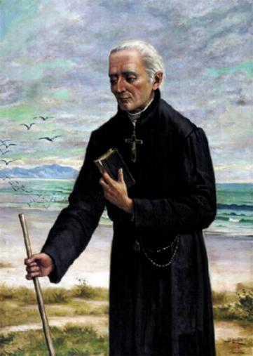

=PRELÚDIO=
PADRE JOSÉ DE ANCHIETA é um exemplo completo de missionário incansável, batalhador e cheio de coragem, que pela grandeza de sua bondade, liberou as rédeas de seu coração carinhoso, permitindo que crescesse de maneira vertiginosa e exuberante, deixando fluir por seus atos e atitudes, um manancial amoroso inigualável, de bons e excepcionais serviços, que beneficiava a todos. Anchieta desde sempre se preocupou em ensinar e dispensar um tratamento cuidadoso aos índios, ao mesmo tempo em que exercitava um esforço impressionante em busca da paz, estabelecendo uma convivência pacífica entre os índios e os portugueses. Mas foi uma caminhada muito difícil para o APÓSTOLO DO BRASIL, porque lidando com os selvagens sem conhecimento da mente civilizada e a ganância de muitos desbravadores que só visavam o lucro, no horizonte do cotidiano descortinava-se desde o amanhecer, um leque diário de possibilidades de atritos e desentendimentos entre eles. Aconteceram saques, prisões, capturas e mortes de ambos os lados.
Mas foi assim, com muita paciência e sobretudo, com o cultivo diário de fervorosas orações, empenhando-se em manter um canal de comunicação aberto permanentemente com a MÃE DE DEUS e JESUS, que o Irmão José conseguiu vitórias admiráveis, as quais lhe valeram um grande respeito e a amizade dos conquistadores e dos índios, sendo inclusive considerado e nomeado por estes, como um "Grande Feiticeiro".
Importante lembrar que ele não se mantinha fixo e instalado num único e mesmo lugar. Catequizava diversas tribos indígenas e lhes levava os ensinamentos cristãos, assim como conselhos para o cotidiano, socorro nas necessidades e providências sensatas para manter as aldeias vivendo em harmonia e paz. Quase sempre a pé e raras vezes a cavalo ou numa embarcação, o Irmão José percorria distâncias surpreendentes. Nas viagens estava sempre acompanhado por um índio fiel, que lhe tinha grande afeição, o ajudava e servia com presteza e dedicação, e o respeitava como um pai. A bagagem que o acompanhava era impressionantemente exígua e transportada dentro de uma pequena maleta escura.
Quando rezava, parecia que o seu espírito se desligava do corpo e reverentemente prostrado, adorava ao SENHOR e nosso DEUS. Anchieta amava tanto a VIRGEM MARIA, que caminhando na praia ou nos deslocamentos de longo percurso, seguia rezando as Aves Maria de seu terço, com um suave sorriso no semblante e o coração mergulhado na eternidade, ao lado do trono da MÃE DE DEUS.
Assim, por essa singela introdução, queremos lhe assegurar a certeza, de que conhecer a existência do Beato Padre José de Anchieta, é vislumbrar naquele modesto, humilde e franzino homem, a força de uma criatura notável, repleto de excepcionais carismas, de valor incomensurável, escolhido por DEUS, para colaborar dignamente na formação da nação brasileira.
APOSTOLADO DOS SAGRADOS CORAÇÕES
http://www.apostoladosagradoscoracoes.com/